十月的話
十月有運動會、連假，月底還遇上颱風停課，課上得斷斷續續。但這個月有很多人走進教室：部落的 ina 來教做紅龜粿，植物工作室的老師來教香茅蒸餾。孩子們也走出教室，到校園找藥草、月桃和竹子。
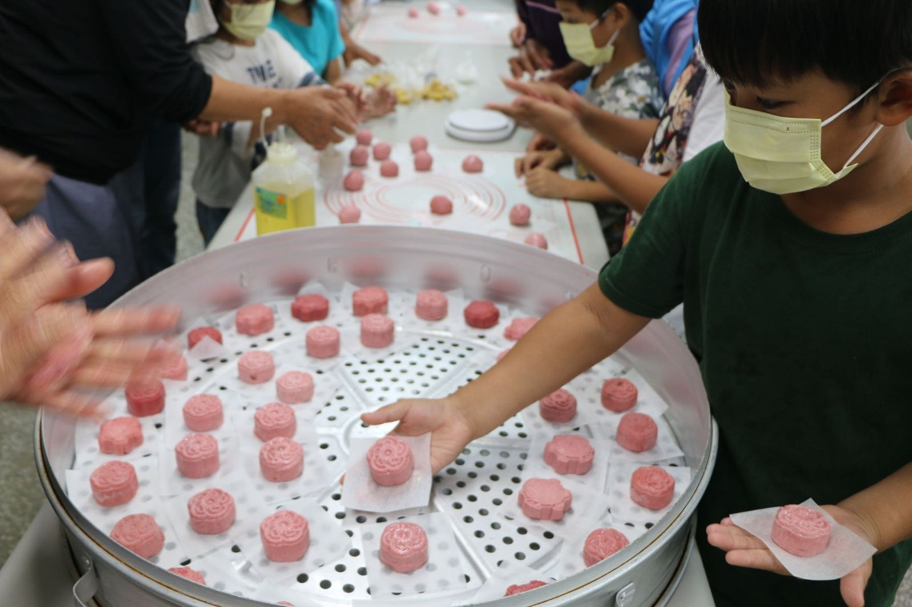
Salimpo 山海文化課程月刊給家長與部落族人的課堂報
▲運動會前夕，中年級把壓好花紋的紅龜粿 angkokoy 一個一個排進大蒸籠。
低年級拿著溪流畫作上台前，老師用這句話邀請孩子說故事。
十月有運動會、連假，月底還遇上颱風停課，課上得斷斷續續。但這個月有很多人走進教室：部落的 ina 來教做紅龜粿，植物工作室的老師來教香茅蒸餾。孩子們也走出教室，到校園找藥草、月桃和竹子。
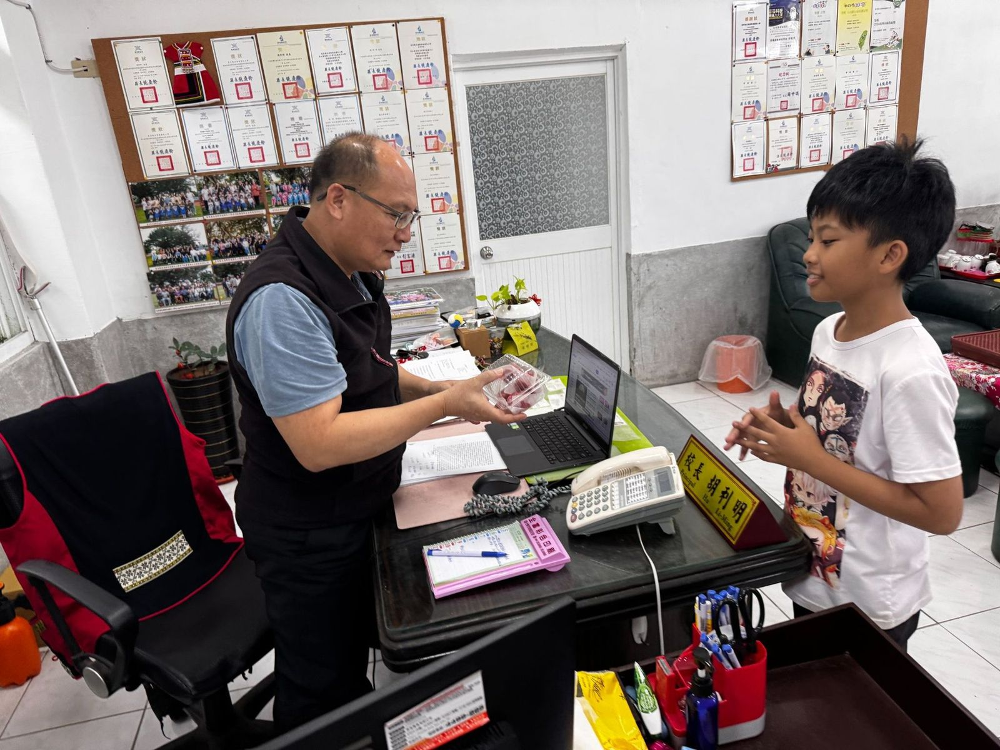
運動會前夕，部落的 ina 們來到學校，教孩子做紅龜粿 angkokoy。長者先在白板上寫下族語：糯米粉 aped no doway、油 simal、餡料 sapakemod。
孩子捧著熱騰騰的紅龜粿，和師長分享。
孩子們分組揉糰 moric，水加多加少要自己拿捏，ina 們在旁邊一個一個幫忙調整。包進餡料，放進模子壓出花紋，輕敲脫模，排在墊子 saksak 上，再放進大蒸籠 mahod。出爐後，孩子捧著熱騰騰的紅龜粿送到校長室，和師長分享。
隔週回到陶土。孩子查字典找「素」的意思，認識素燒，再學兩種做杯子的方法：泥條一圈一圈盤上去的圓杯，和五片 8 公分正方泥板拼成的方杯。最難的是忍住不沾太多水，不然杯子會像布丁一樣塌下去。
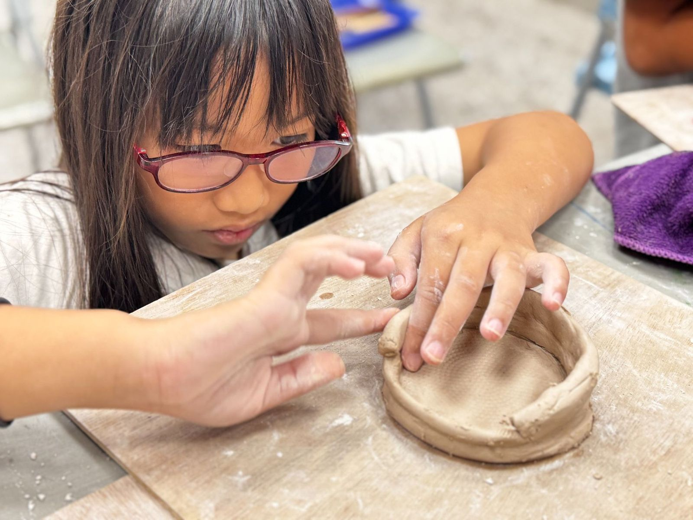
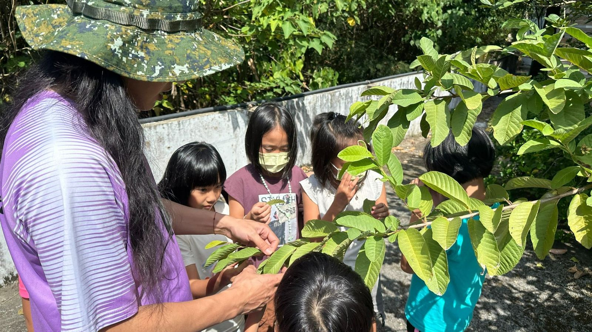
低年級先把溪流踏查的記憶畫下來，用「maolah mi ＿ kako.（我喜歡＿）」的句型上台分享。接著進入藥草單元，認識龍葵 tatokem 等四種阿美族常見藥草，再到校園的番石榴樹 kiyafes 下聞葉子，才知道每天看到的「雜草」原來是藥。
高年級準備採香茅，先學採集工具的族語：小鐮刀 mamiya、鐮刀 kawkaw、磨刀石 sacadiw，練習用刀的安全。到校園藥草園採香茅前，學向山神 Lonalonan 致意的規矩，只取課堂需要的份量。月底請植物工作室的兩位講師到班，看香茅怎麼蒸餾出香氣。
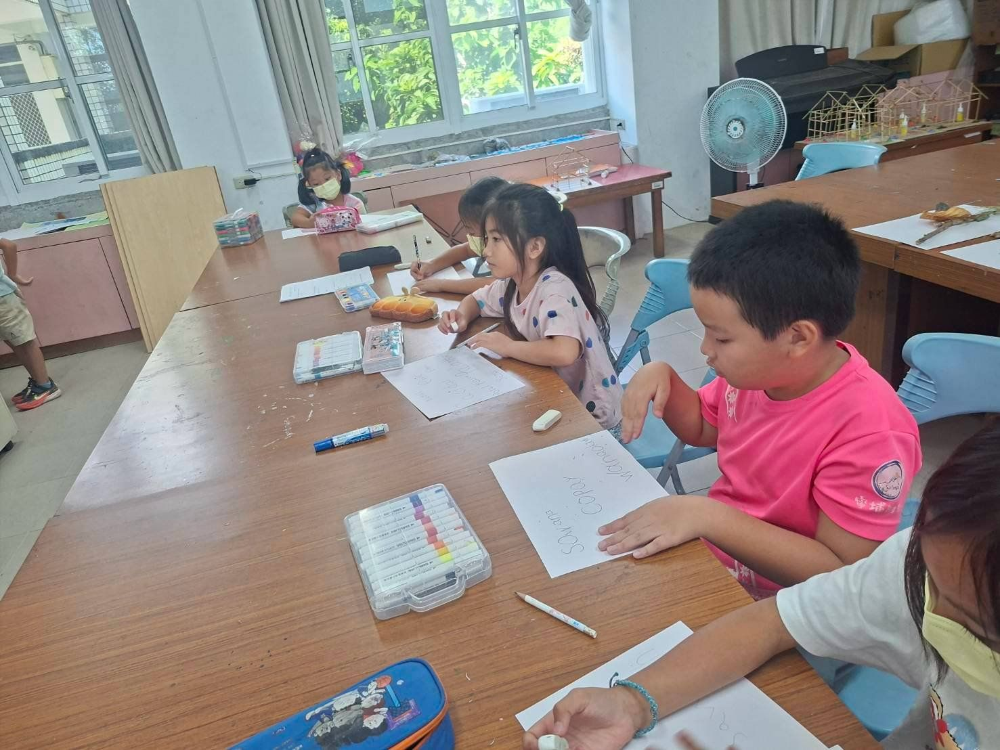
低年級認識氏族 ngasaw：pacidal 是太陽氏族、ciwidian 是水蛭氏族。同一個氏族的孩子分成一組，到校園找齊六朵花、九片樹葉，拼成一幅畫，體會一家人要分工合作。最後做一張自己的族名字卡。
中年級完成「青年」主題畫作，再一起想五個要問部落耆老的問題，準備下個月去訪問。
高年級用「一條魚切成幾塊、哪一塊給誰」練習，體會長輩優先、再往下分享的倫理。討論採海菜時，孩子自己說出專心找海菜就會忘了看浪，所以不能背對海。
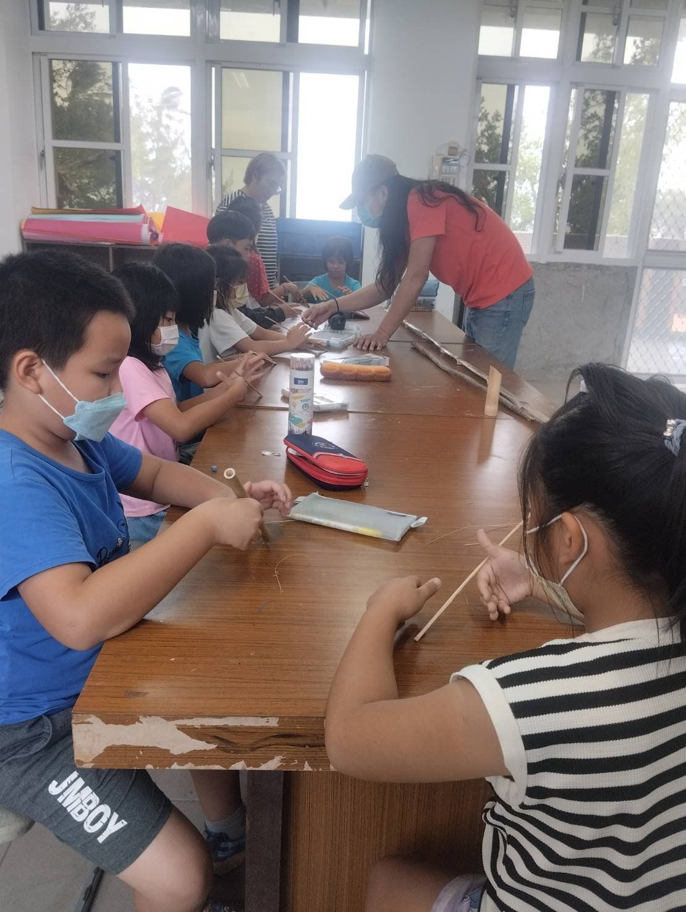
低年級颱風前，看竹子和樹幹被風吹彎的樣子，比較哪一種適合當樑柱，再學劈竹、玩抓竹片。月底到學校附近找月桃，剝去莖的外殼，用石頭敲成絲。音樂課學唱採藤歌，用手勢畫出旋律高低，自己編動作邊唱邊跳。
高年級到竹林採竹。動手之前，老師拿出土珠串向山靈祈求平安，把土珠灑向山林當作交換的禮物。竹子由老師砍下，師生一起拖到空地，去掉細枝和葉子，最後把環境整理乾淨。
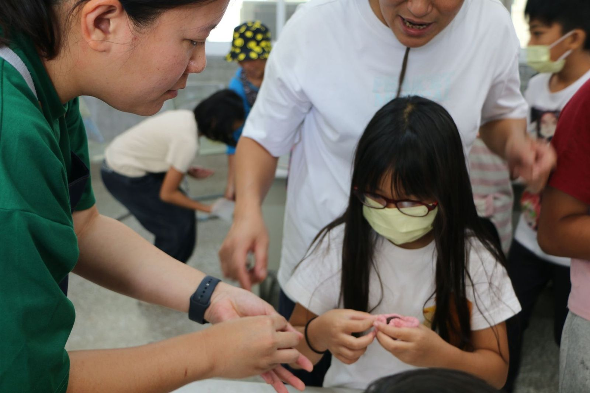
十月八日，部落的 ina 們到學校，教中年級做紅龜粿。孩子揉糰時水加得不準，ina 們就靠過來一個一個調整，一邊用族語說 moric、sapakemod。
下次蒸紅龜粿的空檔，老師想請長輩說說以前運動會的回憶。家裡長輩如果有運動會的故事，歡迎告訴導師，或寫在下面的回覆欄。
擬好訪談問題，練習訪談的禮儀，再到部落當面請教耆老。
邀請長輩到學校，說說族名是誰取的、為什麼這樣取。
到溪邊體驗傳統的捕魚、捕蝦、捕蟹方法。
請耆老說明竹、木、藤這些建材在家屋裡的用處。
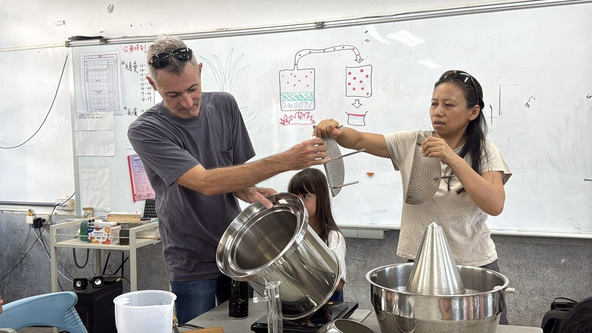
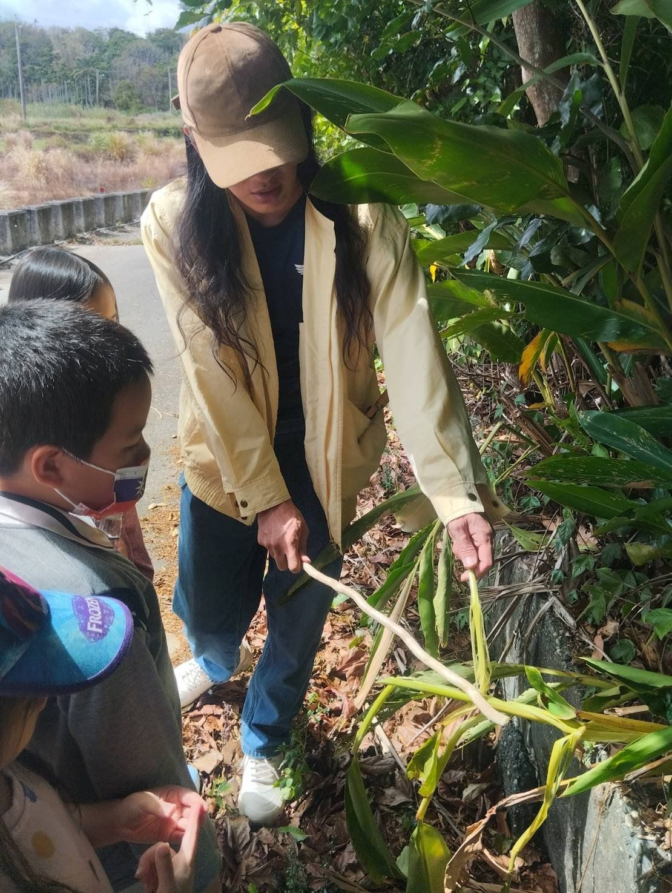
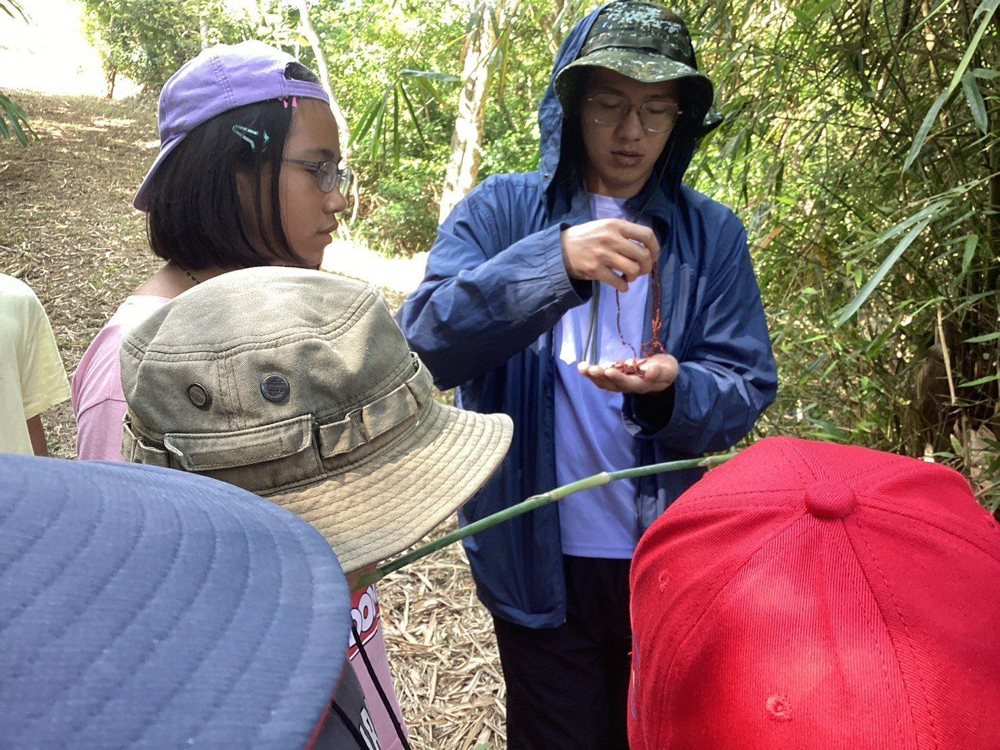
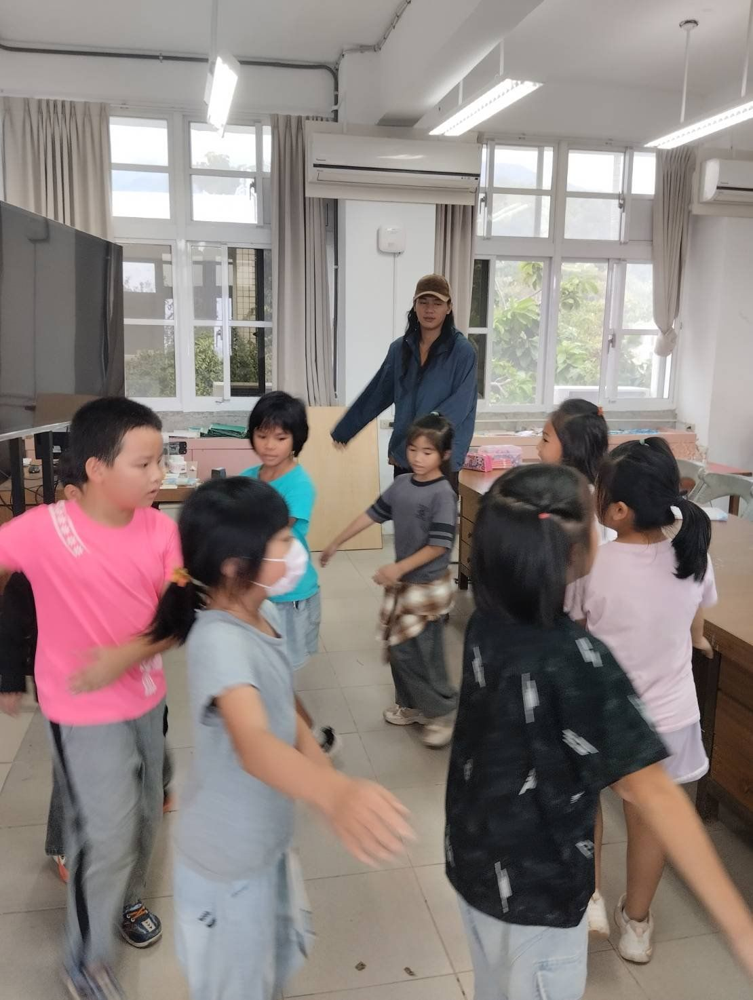
以前運動會前，家裡會做紅龜粿嗎？是誰做的？說給孩子聽。
家附近有沒有龍葵 tatokem、番石榴 kiyafes？請孩子指給你看，說說他學到的族語。
孩子放學回家，用 pasifana'en tamiyanan（告訴我們吧）問他今天學了什麼。
紅龜粿常被當成閩南人的米食，但在東海岸部落，它早就是運動會前家家戶戶準備的點心。這次想讓孩子看見，文化會交流，也會在地生根。蒸的時間比我預期的久，分享時有點趕；下次我想利用等待的時間，請長輩說說以前運動會的回憶。